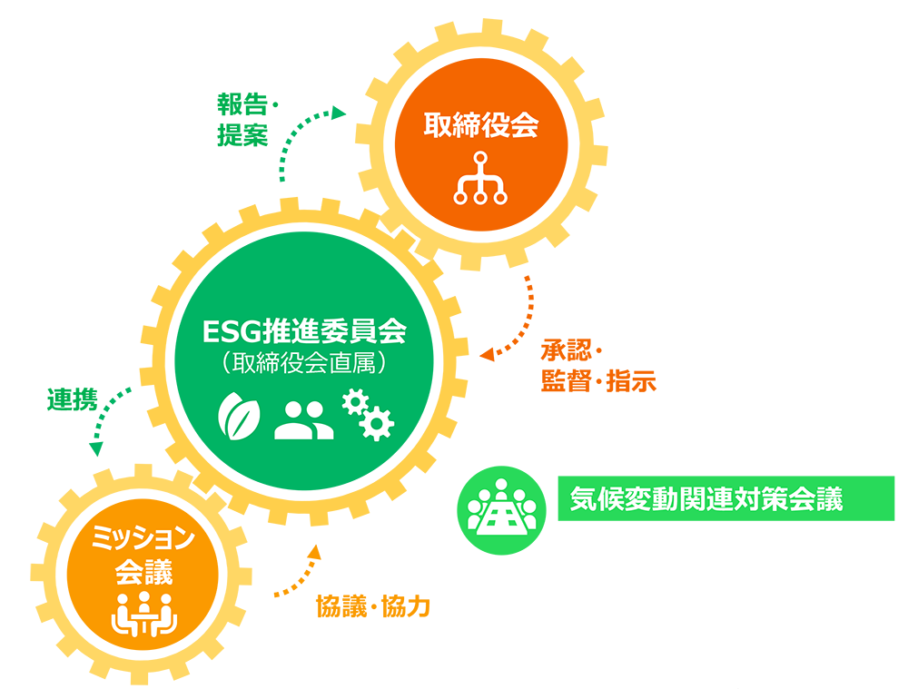
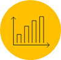
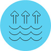

E(Environment)
環境(Environment) 2024年11月更新
■E(Environment)：TCFDの提言に基づく情報開示
| KPI | TCFDスコープ カテゴリ |
2022年度 (CO2) 実績 |
2023年度 (CO2) 実績 |
2024年度 (CO2) 実績 |
2027年 目標 |
|---|---|---|---|---|---|
| 社用車の使用によるCO2排出量 | スコープ1 | 17.7 t | 15.8 t | 18 t | 6 t |
| 本社及び営業所の電気由来のCO2排出量 | スコープ2 | 41.9 t | 42.8 t | 45.7 t | 65 t |
| 小計 | スコープ 1+2の 合計値 |
59.6 t | 58.7 t | 63.7 t | 71 t |
| データセンターによるCO2排出量 | スコープ3 カテゴリ3 |
37.7 t | 37.7 t | 37.7 t | 65 t |
| 社員の出張に伴うCO2排出量※ | スコープ3 カテゴリ6 |
88.3 t | 133.4 t | 149 t | 130 t |
| 社員の通勤に伴うCO2排出量※ | スコープ3 カテゴリ7 |
11.8 t | 18.2 t | 14.5 t | 10 t |
| 合計（スコープ1・2排出量とスコープ3排出量を合計して算定） | サプライチェーン排出量 | 197.4 t | 248.0 t | 264.9 t | 276 t |
事業拡大とユーザー数増加に伴うサーバー増強等により全体のCO2排出量は増加することが想定されますが、ユーザーあたりのCO2排出量を2027年までに半減させることを目指します。
※2023年新型コロナウイルスの５類移行に伴い、リモートワークから出社体制へ移行
ESG重要課題(E)：環境との共生
■企業が焦点を当てるべき4つの領域
TCFDは気候変動関連のリスク及び機会の開示を行う際に企業が焦点を当てるべき４つの領域を概説しています。
当社は全体的なESG経営戦略の一環としてTCFD提言への賛同を表明し下記の通り気候関連情報を開示します。
4つの領域
気候関連のリスク及び、機会に係る当社のガバナンスを開示します。
気候関連のリスク及び機会がもたらす当社の戦略・財務計画への影響をそのような情報が重要な場合は開示します。
気候関連リスクについて、当社がどのように識別・評価・管理しているかについて開示します。
気候関連のリスク及び機会を評価・管理する際に使用する指標と目標をそのような情報が重要な場合は開示します。
■取締役会による監視体制

ESG推進委員会
環境関連の指標及び目標・計画の設定を提案し、決定された計画等の進捗状況をモニタリング
- 気候変動関連リスク及び機会を識別
- 気候変動関連リスク及び機会を評価するために用いる指標（KPI）を提案
- 気候変動関連リスク及び機会を管理するために用いる目標を提案
- 目標の実現にむけた計画を提案
- 計画等の進捗状況をモニタリング
ミッション会議
決定された環境対策関連の目標及び計画の実行に向けてESG推進委員会と緊密に連携し、協力する
取締役会
環境関連の目標及び計画を承認しESG推進委員会を監督
- 気候変動関連リスクと機会を識別
- 目標及び計画を承認
- モニタリング活動を監督
気候変動関連対策会議
効率的な環境関連の対策を行うためにESG推進委員会の委員、及びミッション会議参加者が集う定例会議を年1回程度実施する。
■エンタープライズリスクマネジメント
リスクに対処するための費用と効果を分析・推計し、特定のリスクへの対策を当社の全体的な経営戦略に円滑に組み込むことを目指します。

気候変動関連リスクを単に「低減すべき危険源」として見なすだけではなく、リスクを引き受けることが、成長性や収益性の向上のために、またはその他のESG課題への取り組みの推進のために、適切であり得ると認識しております。

これを可能にするため定期的にシナリオ分析等を行い、将来直面する可能性のある、様々な環境下において識別された気候変動関連リスクの発生確率や影響度、性質を予想・分析する。その結果に基づいてリスクに優先順位を付け、気候変動関連リスクと他のリスク（非環境リスク）及び機会との相対的な重要性を評価します。